Slime Ingredents
As you may know, there are many optional ingredients and main ingredients to make a right choice of your slime. So lets learn every purpose of each slime ingredients.
•PVA Glue
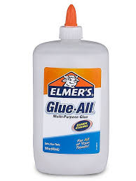
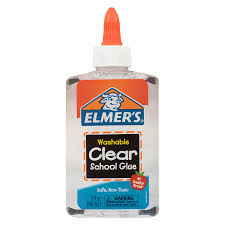
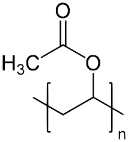
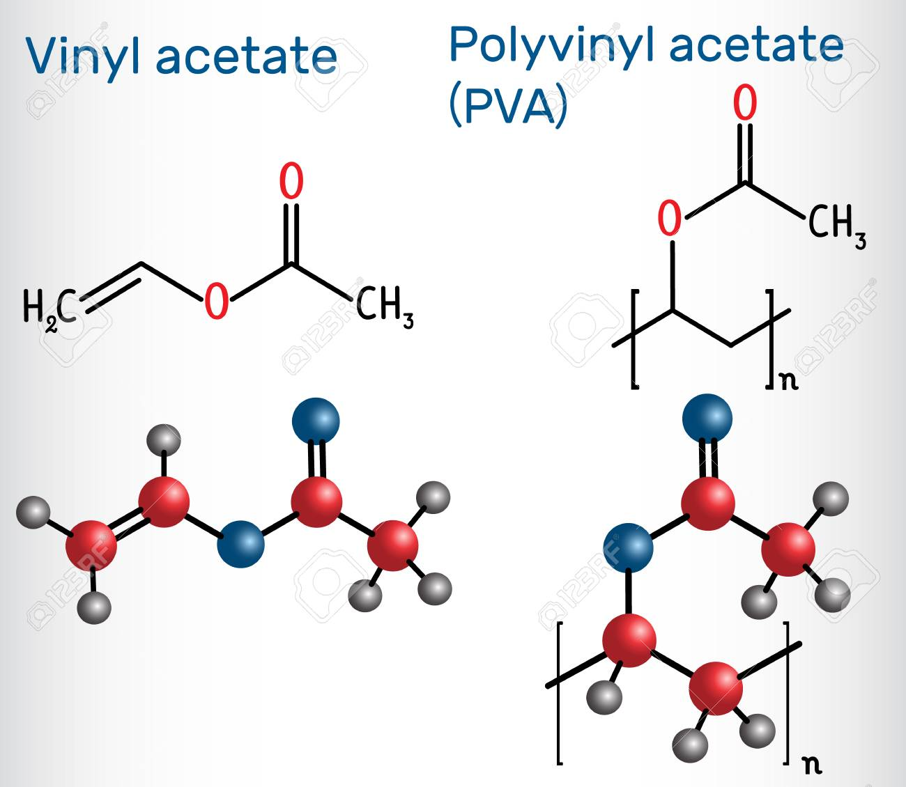
Glue is one of the main ingredient in making slime. Glue is just a flour in baking that is the structure of your product and can be activate like in baking, baking soda or baking powder is used and in making slime, you can use different slime activators. PVA glue makes up all the slime and it is the structure ofyour slime PVA stands for Poly(vinyl acetate) that is best known for as wood glue, white glue, carpenter's glue, and school glue. PVA glue is the common ingredient for making slime. There are many substitution for PVA glue but PVA glue is the best structure of your slime.
As you may know, there are many variety og PVA glue like white glue that is best for making unicorn slime and colored slime. Clear glue is best for making clear, clear-colored slime, galaxy slime and glitter slime! No need to buy special glitter glue.
•Slime Activator


Slime activator is one of the main ingredient in making slime. It activates the polymer(aka PVA glue) of the slime. There are many slime activators.If you don't any
of them, click here. The common slimeact(slime activator) here in Philippines is the liquid detergent and the contact lens
solution. Borax powder is abundant in America. Every slime act must have sodium borate, sodium tetraborate, or disodium tetraborate to activate your slime.
•Acrylic Paint and Food Coloring
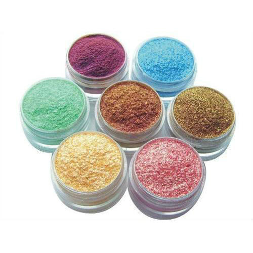
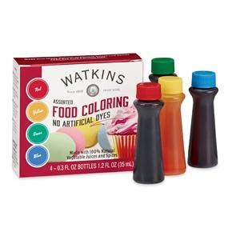
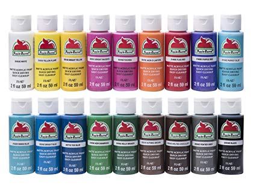
As you may know, this is optional so you don't need to color your slime. There colorings can only enhance your slime. Not just paints, you can use glitter for sparkles and you can use thermochromic pigment for making a changing color slime and you can use pearl powdered pigment for making your slime shine.
•Shaving Foam
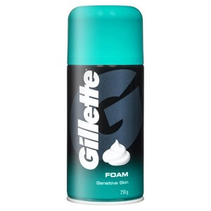
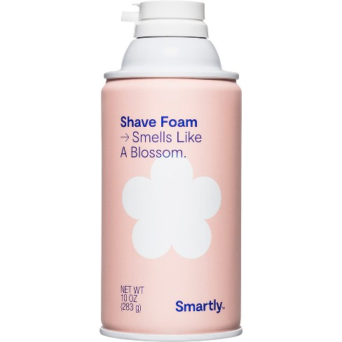
Shaving foam can be expensive even in a small can. Shaving foam is important when making fluffy slime and iceberg slime. From the substance of a shaving foam, it is fluffy and soft. SO when applying it to your slime, it will become a fluffy slime! But when the shaving foam has dried out, it will become hard and crisp. So when making an iceberg slime, it requires lots of shaving foam to make the crisp of your slime. And be reminded that any slime having shaving,the fluffiness of the slime can last just less than a day.
•Water
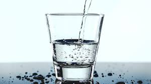
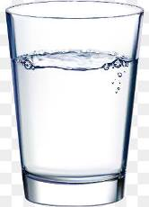
Water can make your slime soft. Without water, you can obtain slime but the slime is hard than usual. The more water is applied to your slime, it will make your slime jiggly. Water can also make your slime elastic, glossy and sticky if you applied too much. So water can enhance the texture of your slime andit is an important ingredient in making ajiggly slime.
| Page 1 | Page 2 | Page 3 |